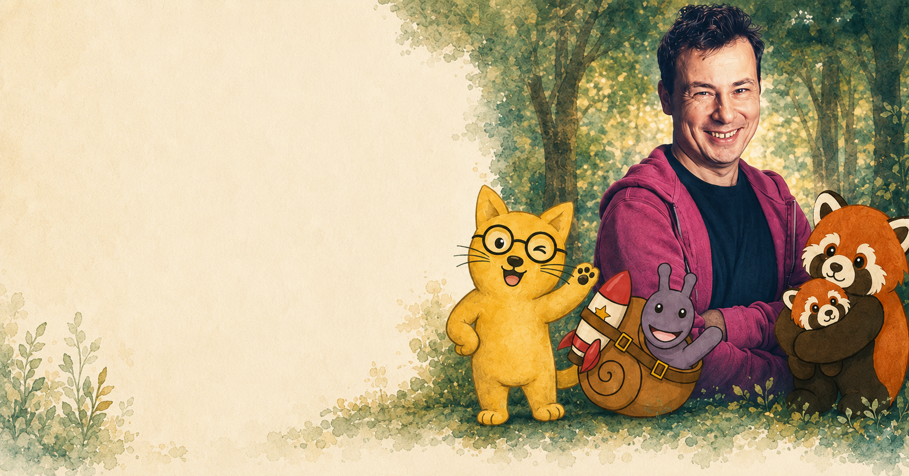
Wenn Fälle komplex werden, braucht es gemeinsame Sprache.
Begleitung für Kitas, Schulen, Helfersysteme und Teams, die herausfordernde Dynamiken besser verstehen und sicherer handeln wollen.
Ich unterstütze Teams dabei, Verhalten nicht vorschnell zu bewerten, sondern gemeinsam zu verstehen: systemisch, klar und alltagstauglich.
Weniger Schuldverschiebung. Mehr Orientierung.
Wenn Fälle komplex werden, braucht es gemeinsame Sprache.
Begleitung für Kitas, Schulen, Helfersysteme und Teams, die herausfordernde Dynamiken besser verstehen und sicherer handeln wollen.
Ich unterstütze Teams dabei, Verhalten nicht vorschnell zu bewerten, sondern gemeinsam zu verstehen: systemisch, klar und alltagstauglich.
Weniger Schuldverschiebung. Mehr Orientierung.


Wobei ich Teams begleite
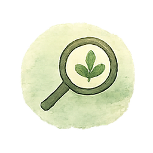
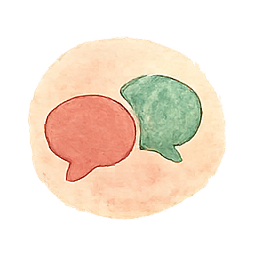
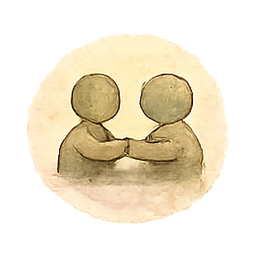
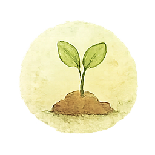

Formate
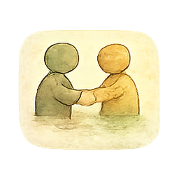
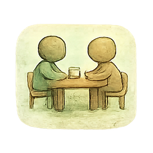
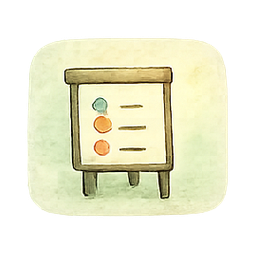
Typische Themen
Mein USP
Ich verbinde Heilpädagogik, persönliche Familienerfahrung und viele Jahre IT- und Systemdenken. Dadurch kann ich zwischen Fachlichkeit, Alltag und Struktur übersetzen – ohne Menschen aus dem Blick zu verlieren. ♡
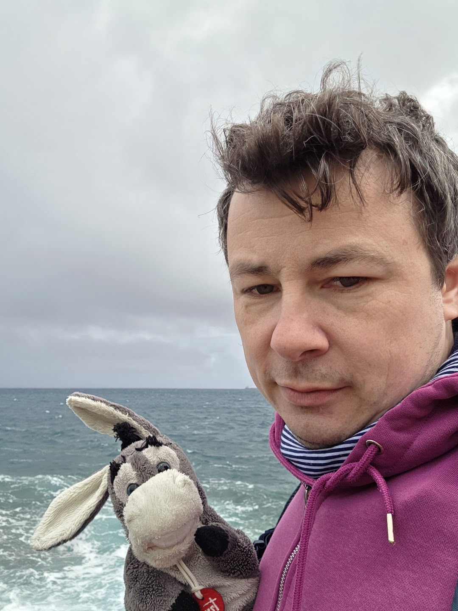
Warum Teams das schätzen
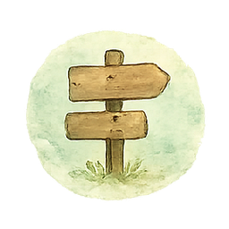
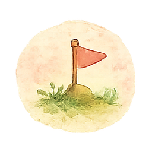
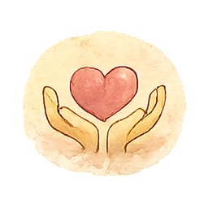
Mit wem ich arbeite
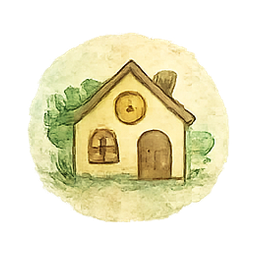
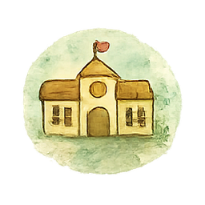
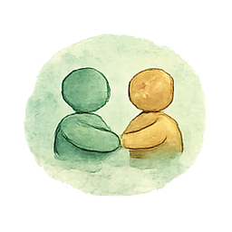
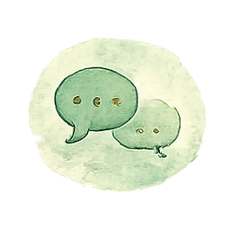

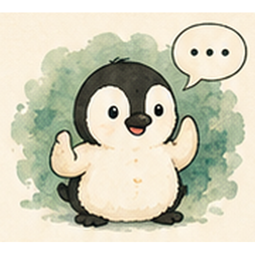


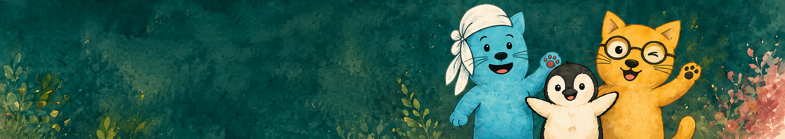
Gemeinsam hinschauen verändert die Handlungssicherheit.
Kontakt aufnehmen
Schreiben Sie mir – ich melde mich zeitnah zurück.

Danke für Ihre Nachricht!
Ich melde mich so bald wie möglich.
(Demo – es wurde noch nichts versendet.)